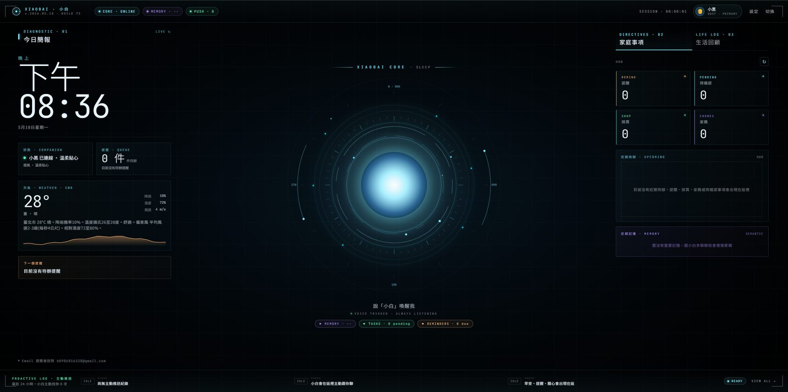
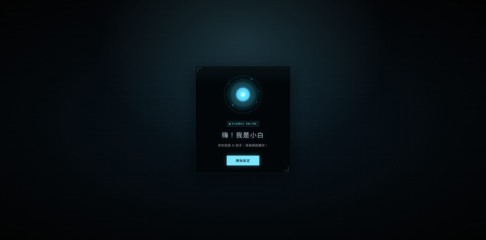
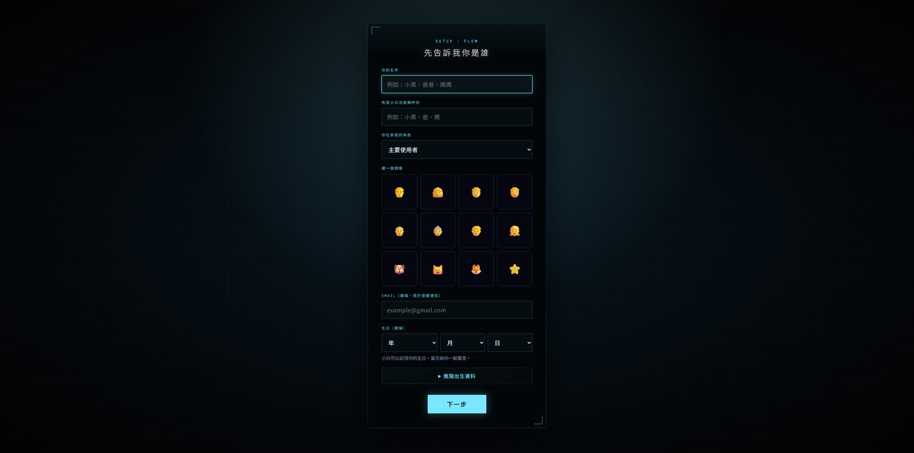
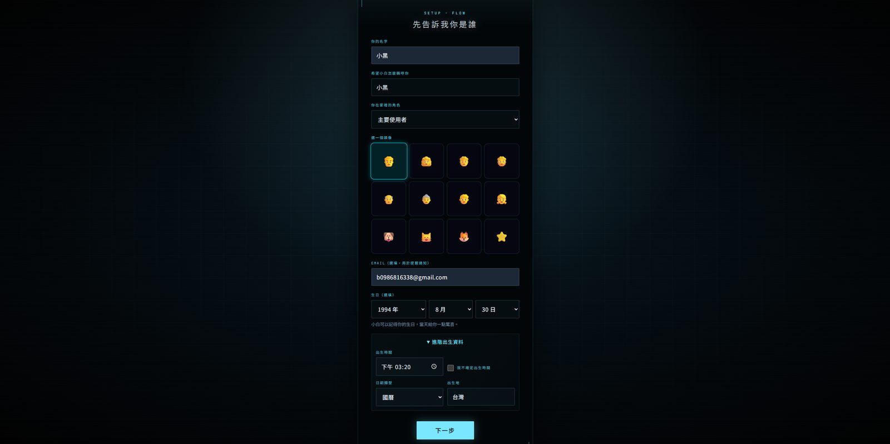
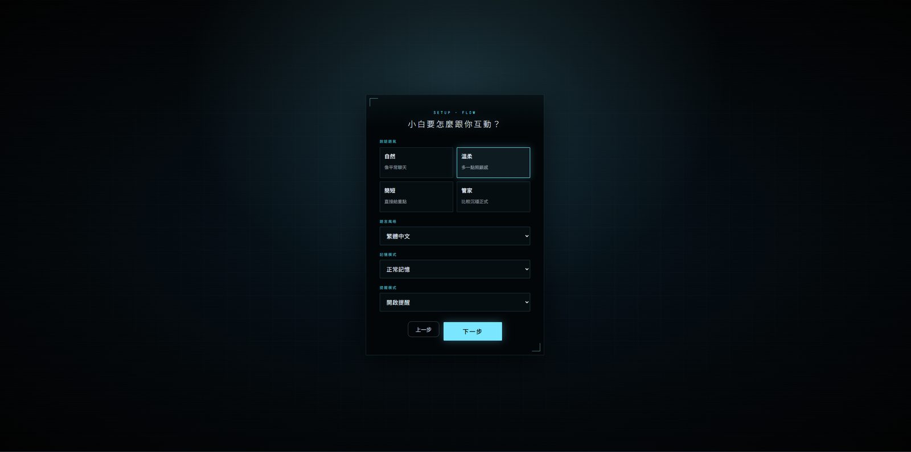
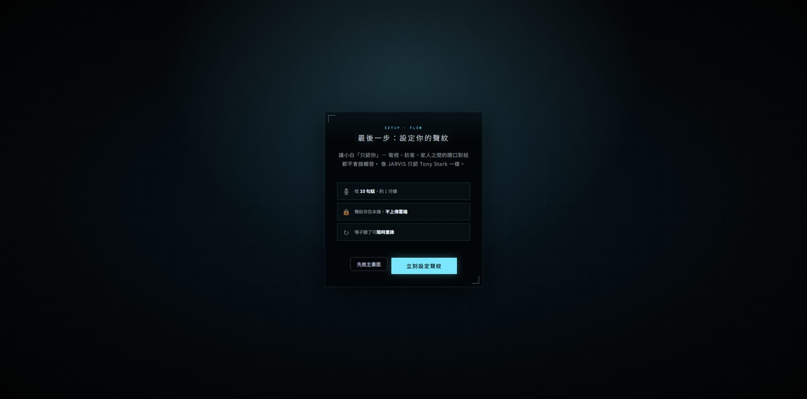
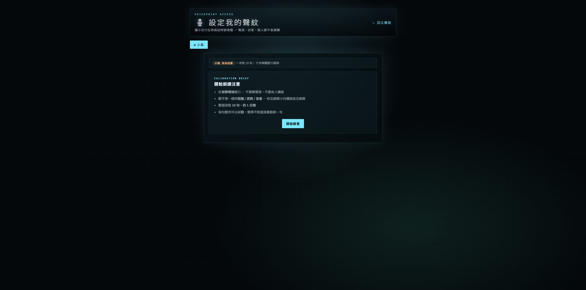
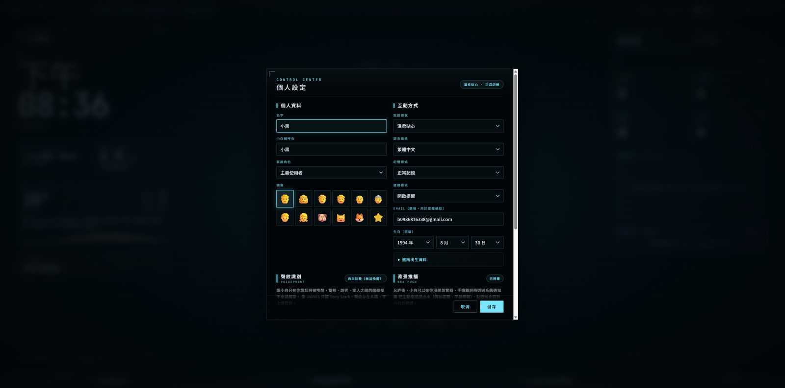
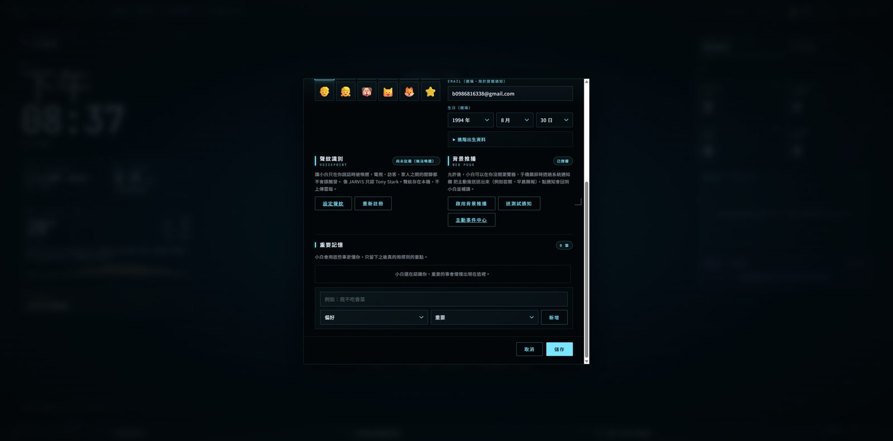
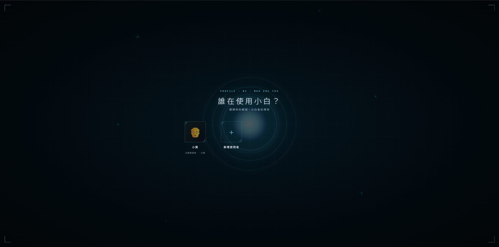

會記得家人的家庭語音 AI。
從提醒、記憶、待辦到每日生活回顧，小白把家裡的瑣事整理成可以被理解、被追蹤、被接續的生活脈絡。

小白是一個專為家庭打造的語音 AI 生活中樞，可以在手機、平板或電腦瀏覽器開啟，直接用說話的方式互動。它不是客服系統，也不是一般聊天機器人，而是把家人的 Profile、提醒、任務、記憶與生活回顧接在一起的家庭助手。
它能認得不同家人，記住穩定偏好，幫你建立提醒與家庭事項，也會把任務、提醒、記憶、主動推播整理成 Life Log。你可以問「我今天做了什麼？」或「還有什麼沒收尾？」小白會用比較像家人助理的方式，把生活裡散掉的小事收回來。









| 裝置 | 手機、平板、電腦，任何可開現代瀏覽器的裝置 |
| 瀏覽器 | Chrome、Safari、Edge（需支援 WebRTC / Web Audio / Notification API） |
| 連線方式 | 本機 HTTP 或 ngrok HTTPS；手機加入主畫面時建議使用 HTTPS |
| 麥克風 | 需授權瀏覽器使用麥克風 |
| 網路 | 需要（語音對話與天氣、搜尋等工具會呼叫外部 API） |
| 開放對象 | 家庭內部使用，不對外開放 |